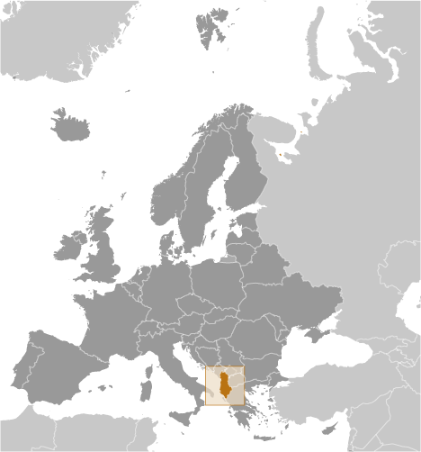
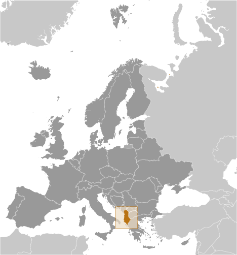

Europe :: ALBANIA
Introduction :: ALBANIA
-
Albania declared its independence from the Ottoman Empire in 1912, but was conquered by Italy in 1939 and occupied by Germany in 1943. Communist partisans took over the country in 1944. Albania allied itself first with the USSR (until 1960), and then with China (to 1978). In the early 1990s, Albania ended 46 years of xenophobic communist rule and established a multiparty democracy. The transition has proven challenging as successive governments have tried to deal with high unemployment, widespread corruption, dilapidated infrastructure, powerful organized crime networks, and combative political opponents.Albania has made progress in its democratic development since first holding multiparty elections in 1991, but deficiencies remain. International observers judged elections to be largely free and fair since the restoration of political stability following the collapse of pyramid schemes in 1997; however, most of Albania's post-communist elections have been marred by claims of electoral fraud. Albania joined NATO in April 2009 and in June 2014 became a candidate for EU accession. Although Albania's economy continues to grow, it has slowed, and the country is still one of the poorest in Europe. A large informal economy and an inadequate energy and transportation infrastructure remain obstacles.
Geography :: ALBANIA
-
Southeastern Europe, bordering the Adriatic Sea and Ionian Sea, between Greece to the south and Montenegro and Kosovo to the north41 00 N, 20 00 EEuropetotal: 28,748 sq kmland: 27,398 sq kmwater: 1,350 sq kmcountry comparison to the world: 145slightly smaller than Marylandtotal: 691 kmborder countries (4): Greece 212 km, Kosovo 112 km, Macedonia 181 km, Montenegro 186 km362 kmterritorial sea: 12 nmcontinental shelf: 200-m depth or to the depth of exploitationmild temperate; cool, cloudy, wet winters; hot, clear, dry summers; interior is cooler and wettermostly mountains and hills; small plains along coastmean elevation: 708 melevation extremes: lowest point: Adriatic Sea 0 mhighest point: Maja e Korabit (Golem Korab) 2,764 mpetroleum, natural gas, coal, bauxite, chromite, copper, iron ore, nickel, salt, timber, hydropower, arable landagricultural land: 43.8%arable land 22.7%; permanent crops 2.7%; permanent pasture 18.4%forest: 28.3%other: 27.9% (2011 est.)3,310 sq km (2012)a fairly even distribution, with somewhat higher concentrations of people in the western and central parts of the countrydestructive earthquakes; tsunamis occur along southwestern coast; floods; droughtdeforestation; soil erosion; water pollution from industrial and domestic effluentsparty to: Air Pollution, Biodiversity, Climate Change, Climate Change-Kyoto Protocol, Desertification, Endangered Species, Hazardous Wastes, Law of the Sea, Ozone Layer Protection, Wetlandssigned, but not ratified: none of the selected agreementsstrategic location along Strait of Otranto (links Adriatic Sea to Ionian Sea and Mediterranean Sea)
People and Society :: ALBANIA
-
3,038,594 (July 2016 est.)country comparison to the world: 137noun: Albanian(s)adjective: AlbanianAlbanian 82.6%, Greek 0.9%, other 1% (including Vlach, Roma (Gypsy), Macedonian, Montenegrin, and Egyptian), unspecified 15.5% (2011 est.)Albanian 98.8% (official - derived from Tosk dialect), Greek 0.5%, other 0.6% (including Macedonian, Roma, Vlach, Turkish, Italian, and Serbo-Croatian), unspecified 0.1% (2011 est.)Muslim 56.7%, Roman Catholic 10%, Orthodox 6.8%, atheist 2.5%, Bektashi (a Sufi order) 2.1%, other 5.7%, unspecified 16.2%note: all mosques and churches were closed in 1967 and religious observances prohibited; in November 1990, Albania began allowing private religious practice (2011 est.)0-14 years: 18.37% (male 295,022/female 263,141)15-24 years: 18.09% (male 284,201/female 265,530)25-54 years: 40.73% (male 589,707/female 648,021)55-64 years: 11.23% (male 168,500/female 172,587)65 years and over: 11.58% (male 165,076/female 186,809) (2016 est.)total dependency ratio: 44.8%youth dependency ratio: 26.9%elderly dependency ratio: 18%potential support ratio: 5.6% (2015 est.)total: 32.5 yearsmale: 31.2 yearsfemale: 33.8 years (2016 est.)country comparison to the world: 960.31% (2016 est.)country comparison to the world: 17513.1 births/1,000 population (2016 est.)country comparison to the world: 1536.7 deaths/1,000 population (2016 est.)country comparison to the world: 141-3.3 migrant(s)/1,000 population (2016 est.)country comparison to the world: 184a fairly even distribution, with somewhat higher concentrations of people in the western and central parts of the countryurban population: 57.4% of total population (2015)rate of urbanization: 2.21% annual rate of change (2010-15 est.)TIRANA (capital) 454,000 (2015)at birth: 1.1 male(s)/female0-14 years: 1.12 male(s)/female15-24 years: 1.07 male(s)/female25-54 years: 0.91 male(s)/female55-64 years: 0.98 male(s)/female65 years and over: 0.89 male(s)/femaletotal population: 0.98 male(s)/female (2016 est.)25 (2010 est.)29 deaths/100,000 live births (2015 est.)country comparison to the world: 128total: 12.3 deaths/1,000 live birthsmale: 13.7 deaths/1,000 live birthsfemale: 10.8 deaths/1,000 live births (2016 est.)country comparison to the world: 120total population: 78.3 yearsmale: 75.7 yearsfemale: 81.2 years (2016 est.)country comparison to the world: 611.51 children born/woman (2016 est.)country comparison to the world: 19769.3% (2008/09)5.9% of GDP (2014)country comparison to the world: 1111.15 physicians/1,000 population (2013)2.6 beds/1,000 population (2012)improved:urban: 84.3% of populationrural: 81.8% of populationtotal: 83.6% of populationunimproved:urban: 15.7% of populationrural: 18.2% of populationtotal: 16.4% of population (2015 est.)improved:urban: 95.5% of populationrural: 90.2% of populationtotal: 93.2% of populationunimproved:urban: 4.5% of populationrural: 9.8% of populationtotal: 6.8% of population (2015 est.)0.04% (2013 est.)country comparison to the world: 126NANA18.1% (2014)country comparison to the world: 886.3% (2009)country comparison to the world: 803.54% of GDP (2013)country comparison to the world: 130definition: age 15 and over can read and writetotal population: 97.6%male: 98.4%female: 96.9% (2015 est.)total: 16 yearsmale: 16 yearsfemale: 16 years (2014)total number: 72,818percentage: 12% (2005 est.)total: 30.2%male: 32.5%female: 26.1% (2013 est.)country comparison to the world: 46
Government :: ALBANIA
-
conventional long form: Republic of Albaniaconventional short form: Albanialocal long form: Republika e Shqiperiselocal short form: Shqiperiaformer: People's Socialist Republic of Albaniaetymology: the English-language country name seems to be derived from the ancient Illyrian tribe of the Albani; the native name "Shqiperia" is popularly interpreted to mean "Land of the eagles"parliamentary republicname: Tirana (Tirane)geographic coordinates: 41 19 N, 19 49 Etime difference: UTC+1 (6 hours ahead of Washington, DC, during Standard Time)daylight saving time: +1hr, begins last Sunday in March; ends last Sunday in October12 counties (qarqe, singular - qark); Berat, Diber, Durres, Elbasan, Fier, Gjirokaster, Korce, Kukes, Lezhe, Shkoder, Tirane, Vlore28 November 1912 (from the Ottoman Empire)Independence Day, 28 November (1912) also known as Flag Dayseveral previous; latest approved by the Assembly 21 October 1998, adopted by popular referendum 22 November 1998, promulgated 28 November 1998; amended several times, last in 2012 (2016)civil law system except in the northern rural areas where customary law known as the "Code of Leke" prevailshas not submitted an ICJ jurisdiction declaration; accepts ICCt jurisdictioncitizenship by birth: nocitizenship by descent only: at least one parent must be a citizen of Albaniadual citizenship recognized: yesresidency requirement for naturalization: 5 years18 years of age; universalchief of state: President of the Republic Bujar NISHANI (since 24 July 2012)head of government: Prime Minister Edi RAMA (since 10 September 2013); Deputy Prime Minister Niko PELESHIcabinet: Council of Ministers proposed by the prime minister, nominated by the president, and approved by the Assemblyelections/appointments: president indirectly elected by the Assembly for a 5-year term (eligible for a second term); a candidate needs three-fifths majority vote of the Assembly in 1 of 3 rounds or a simple majority in 2 additional rounds to become president; election last held in 4 rounds during the period 30 May-11 June 2012 (next election to be held in 2017); prime minister appointed by the president on the proposal of the majority party or coalition of parties in the Assemblyelection results: Bujar NISHANI elected president; Assembly vote - 73 of 140 in fourth rounddescription: unicameral Assembly or Kuvendi (140 seats; members directly elected in multi-seat constituencies by proportional representation vote to serve 4-year terms)elections: last held on 23 June 2013 (next to be held in 2017)election results: percent of vote by party - PS 41.36%, PD 30.63%, LSI 10.46%, PR 3.02%, PDIU 2.61%, other 11.92%; seats by party - PS 65, PD 50, LSI 16, PDIU 4, PR 3, other 2; seats by parliamentary group as of April 2015 - ASHE 88, APMI 50, 2 - outside of the majority and opposition groupshighest court(s): highest court(s): Supreme Court or Cour Supreme (consists of 150 judges organized into 4 divisions: civil and commercial; social security and labor; criminal; and administrative; Constitutional Council (consists of 9 members including the court president); note - Algeria's judicial system does not include sharia courtsjudge selection and term of office: Constitutional Court judges appointed by the president with the consent of the Assembly to serve single 9-year terms with one-third of the membership renewed every 3 years; chairman elected by the People's Assembly for a single 3-year term; Court of Cassation judges, including the chairman, appointed by the president with the consent of the Assembly to serve single 9-year terms)subordinate courts: Courts of Appeal; Courts of First InstanceAlliance for Employment, Welfare, and Integration or APMI (coalition of 24 centrist and center-right parties) [Sali BERISHA]:Christian Democratic Party or PDK [Nard NDOKA]Democratic Party or PD [Lulzim BASHA]Movement for National Development of LZHK [Dashamir SHEHI]Republican Party or PR [Fatmir MEDIU]Alliance for a European Albania or ASHE (coalition of 38 parties from far left to right wing) [Edi RAMA]:Christian Democratic Party of PKD [Mark FRROKU]Party for Justice, Integration and Unity or PDIU [Shpetim IDRIZI] (formerly part of APMI)Socialist Movement for Integration or LSI [Ilir META]Socialist Party or PS [Edi RAMA]Union for Human Rights Party or PBDNJ [Vangjel DULE]other parties:New Democratic Spirit or FRD [Bamir TOPI]note: only the major parties of each coalition are listedConfederation of Trade Unions of Albania or KSSH [Kol NIKOLLAJ]Omonia [Vasil BOLLANO]Union of Independent Trade Unions of Albania or BSPSH [Gezim KALAJA]BSEC, CD, CE, CEI, EAPC, EBRD, EITI (compliant country), FAO, IAEA, IBRD, ICAO, ICC (national committees), ICCt, ICRM, IDA, IDB, IFAD, IFC, IFRCS, ILO, IMF, IMO, Interpol, IOC, IOM, IPU, ISO (correspondent), ITU, ITUC (NGOs), MIGA, NATO, OAS (observer), OIC, OIF, OPCW, OSCE, PCA, SELEC, UN, UNCTAD, UNESCO, UNIDO, UNWTO, UPU, WCO, WFTU (NGOs), WHO, WIPO, WMO, WTOchief of mission: Ambassador Floreta FABER (since 18 May 2015)chancery: 1312 18th Street NW, 4th Floor, Washington, DC 20036telephone: [1] (202) 223-4942FAX: [1] (202) 628-7342consulate(s) general: New Yorkchief of mission: Ambassador Donald LU (since 13 January 2015)embassy: Rruga e Elbasanit, 103, Tiranamailing address: US Department of State, 9510 Tirana Place, Dulles, VA 20189-9510telephone: [355] (4) 2247-285FAX: [355] (4) 2232-222red with a black two-headed eagle in the center; the design is claimed to be that of 15th-century hero George Kastrioti SKANDERBEG, who led a successful uprising against the Ottoman Turks that resulted in a short-lived independence for some Albanian regions (1443-78); an unsubstantiated explanation for the eagle symbol is the tradition that Albanians see themselves as descendants of the eagle; they refer to themselves as "Shqiptare," which translates as "sons of the eagle"double-headed eagle; national colors: red, blackname: "Hymni i Flamurit" (Hymn to the Flag)lyrics/music: Aleksander Stavre DRENOVA/Ciprian PORUMBESCUnote: adopted 1912
Economy :: ALBANIA
-
Albania, a formerly closed, centrally-planned state, is a developing country with a modern open-market economy. Albania managed to weather the first waves of the global financial crisis but, more recently, the negative effects of the crisis have caused a significant economic slowdown. Close trade, remittance, and banking sector ties with Greece and Italy make Albania vulnerable to spillover effects of debt crises and weak growth in the euro zone.Remittances, a significant catalyst for economic growth, declined from 12-15% of GDP before the 2008 financial crisis to 5.7% of GDP in 2014, mostly from Albanians residing in Greece and Italy. The agricultural sector, which accounts for almost half of employment but only about one-fifth of GDP, is limited primarily to small family operations and subsistence farming, because of a lack of modern equipment, unclear property rights, and the prevalence of small, inefficient plots of land. Complex tax codes and licensing requirements, a weak judicial system, endemic corruption, poor enforcement of contracts and property issues, and antiquated infrastructure contribute to Albania's poor business environment making attracting foreign investment difficult.Albania’s electricity supply is uneven despite upgraded transmission capacities with neighboring countries. Technical and non-technical losses in electricity - including theft and non-payment - continue to undermine the financial viability of the entire system, although the government has taken steps to stem non-technical losses and has begun to upgrade the distribution grid. Also, with help from international donors, the government is taking steps to improve the poor national road and rail network, a long standing barrier to sustained economic growth.Inward FDI has increased significantly in recent years as the government has embarked on an ambitious program to improve the business climate through fiscal and legislative reforms. The government is focused on the simplification of licensing requirements and tax codes, and it entered into a new arrangement with the IMF for additional financial and technical support. Albania’s IMF program may be at risk, however, because the government has not collected sufficient tax revenue needed to reduce the budget deficit. The country continues to face increasing public debt, exceeding its former statutory limit of 60% of GDP in 2013 and reaching 73% in 2015.$32.65 billion (2015 est.)$31.81 billion (2014 est.)$31.18 billion (2013 est.)note: data are in 2015 US dollarsunreported output may be as large as 50% of official GDPcountry comparison to the world: 127$11.54 billion (2015 est.)2.6% (2015 est.)2% (2014 est.)1.1% (2013 est.)country comparison to the world: 108$11,900 (2015 est.)$11,400 (2014 est.)$11,000 (2013 est.)note: data are in 2015 US dollarscountry comparison to the world: 12918.4% of GDP (2015 est.)14% of GDP (2014 est.)17.7% of GDP (2013 est.)country comparison to the world: 122household consumption: 85.8%government consumption: 10.6%investment in fixed capital: 27.7%investment in inventories: 1.7%exports of goods and services: 36.7%imports of goods and services: -62.5% (2015 est.)agriculture: 21.9%industry: 14.9%services: 63.3%(2015 est.)wheat, corn, potatoes, vegetables, fruits, sugar beets, grapes; meat, dairy products; sheepfood and tobacco products; textiles and clothing; lumber, oil, cement, chemicals, mining, basic metals, hydropower2.3% (2015 est.)country comparison to the world: 921.122 million (2015 est.)country comparison to the world: 142agriculture: 41.8%industry: 11.4%services: 46.8% (December 2014 est)17.3% (2015 est.)17.5% (2014 est.)note: these official rates may not include those working at near-subsistence farmingcountry comparison to the world: 16214.3% (2012 est.)lowest 10%: 4.1%highest 10%: 20.5% (2012)29 (2012 est.)30 (2008 est.)country comparison to the world: 126revenues: $3.019 billionexpenditures: $3.472 billion (2015 est.)26.2% of GDP (2015 est.)country comparison to the world: 109-3.9% of GDP (2015 est.)country comparison to the world: 13871.4% of GDP (2015 est.)69.3% of GDP (2014 est.)country comparison to the world: 42calendar year1.9% (2015 est.)1.6% (2014 est.)country comparison to the world: 1182.25% (31 December 2014)3% (31 December 2013)country comparison to the world: 1128.7% (31 December 2015 est.)8.66% (31 December 2014 est.)country comparison to the world: 96$3.054 billion (31 December 2015 est.)$3.066 billion (31 December 2014 est.)country comparison to the world: 117$5.72 billion (31 December 2015 est.)$6.269 billion (31 December 2014 est.)country comparison to the world: 124$7.18 billion (31 December 2015 est.)$8.231 billion (31 December 2014 est.)country comparison to the world: 113$NA-$1.311 billion (2015 est.)-$1.71 billion (2014 est.)country comparison to the world: 129$854.7 million (2015 est.)$1.241 billion (2014 est.)country comparison to the world: 160textiles, footwear; asphalt, metals and metallic ores, crude oil; vegetables, fruits, tobaccoItaly 43.4%, Kosovo 9.8%, US 7.7%, China 6.2%, Greece 5.3%, Spain 4.8% (2015)$3.402 billion (2015 est.)$4.17 billion (2014 est.)country comparison to the world: 138machinery and equipment, foodstuffs, textiles, chemicalsItaly 33.5%, China 10.1%, Greece 9%, Turkey 6.7%, Germany 5.2% (2015)$3.139 billion (31 December 2015 est.)$2.665 billion (31 December 2014 est.)country comparison to the world: 101$7.716 billion (31 December 2015 est.)$8 billion (31 December 2014 est.)country comparison to the world: 114$5.557 billion (31 December 2013)$4.994 billion (31 December 2012)country comparison to the world: 98leke (ALL) per US dollar -125.96 (2015 est.)105.48 (2014 est.)105.48 (2013 est.)108.19 (2012 est.)100.9 (2011 est.)
Energy :: ALBANIA
-
electrification - total population: 100% (2016)4.7 billion kWh (2014 est.)country comparison to the world: 1197.793 billion kWh (2014 est.)country comparison to the world: 99288.5 million kWh (2014 est.)country comparison to the world: 743.355 billion kWh (2014 est.)country comparison to the world: 501.9 million kW (2014 est.)country comparison to the world: 1105.2% of total installed capacity (2013 est.)country comparison to the world: 2030% of total installed capacity (2013 est.)country comparison to the world: 4094.8% of total installed capacity (2013 est.)country comparison to the world: 90% of total installed capacity (2013 est.)country comparison to the world: 15120,160 bbl/day (2015 est.)country comparison to the world: 7023,320 bbl/day (2014 est.)country comparison to the world: 570 bbl/day (2013 est.)country comparison to the world: 79200 million bbl (1 January 2016 es)country comparison to the world: 63753.2 bbl/day (2013 est.)country comparison to the world: 10727,000 bbl/day (2014 est.)country comparison to the world: 120614.1 bbl/day (2013 est.)country comparison to the world: 11728,330 bbl/day (2013 est.)country comparison to the world: 10932 million cu m (2014 est.)country comparison to the world: 8932 million cu m (2014 est.)country comparison to the world: 1120 cu m (2013 est.)country comparison to the world: 550 cu m (2013 est.)country comparison to the world: 155821.2 million cu m (1 January 2016 es)country comparison to the world: 1054.3 million Mt (2013 est.)country comparison to the world: 131
Communications :: ALBANIA
-
total subscriptions: 226,718subscriptions per 100 inhabitants: 7 (July 2015 est.)country comparison to the world: 123total: 3.401 millionsubscriptions per 100 inhabitants: 112 (July 2015 est.)country comparison to the world: 133general assessment: despite new investment in fixed lines, teledensity remains low with roughly 10 fixed lines per 100 people; mobile-cellular telephone use is widespread and generally effectivedomestic: offsetting the shortage of fixed-line capacity, mobile-cellular phone service has been available since 1996; by 2011, multiple companies were providing mobile services, and mobile teledensity had reached 100 per 100 persons; Internet broadband services initiated in 2005, but growth has been slow; Internet cafes are popular in Tirana and have started to spread outside the capitalinternational: country code - 355; submarine cable provides connectivity to Italy, Croatia, and Greece; the Trans-Balkan Line, a combination submarine cable and land fiber-optic system, provides additional connectivity to Bulgaria, Macedonia, and Turkey; international traffic carried by fiber-optic cable and, when necessary, by microwave radio relay from the Tirana exchange to Italy and Greece (2015)3 public TV networks, one of which transmits by satellite to Albanian-language communities in neighboring countries; more than 60 private TV stations; many viewers can pick up Italian and Greek TV broadcasts via terrestrial reception; cable TV service is available; 2 public radio networks and roughly 25 private radio stations; several international broadcasters are available (2010).altotal: 1.916 millionpercent of population: 63.2% (July 2015 est.)country comparison to the world: 104
Transportation :: ALBANIA
-
number of registered air carriers: 1inventory of registered aircraft operated by air carriers: 1annual passenger traffic on registered air carriers: 151,632annual freight traffic on registered air carriers: 0 mt-km (2015)ZA (2016)4 (2016)country comparison to the world: 183total: 42,438 to 3,047 m: 31,524 to 2,437 m: 1 (2013)total: 1914 to 1,523 m: 1 (2012)1 (2013)gas 331 km; oil 249 km (2013)total: 677 kmstandard gauge: 677 km 1.435-m gauge (2014)country comparison to the world: 104total: 18,000 kmpaved: 7,020 kmunpaved: 10,980 km (2002)country comparison to the world: 11641 km (on the Bojana River) (2011)country comparison to the world: 103total: 17by type: cargo 16, roll on/roll off 1foreign-owned: 1 (Turkey 1)registered in other countries: 5 (Antigua and Barbuda 1, Panama 4) (2010)country comparison to the world: 99major seaport(s): Durres, Sarande, Shengjin, Vlore
Military and Security :: ALBANIA
-
Land Forces Command, Navy Force Command, Air Forces Command (2013)19 is the legal minimum age for voluntary military service; 18 is the legal minimum age in case of general/partial compulsory mobilization (2012)0.85% of GDP (2015)1.04% of GDP (2014)1.5% of GDP (2013)1.47% of GDP (2012)1.52% of GDP (2011)country comparison to the world: 112
Transnational Issues :: ALBANIA
-
nonestateless persons: 7,442 (2015)increasingly active transshipment point for Southwest Asian opiates, hashish, and cannabis transiting the Balkan route and - to a lesser extent - cocaine from South America destined for Western Europe; limited opium and expanding cannabis production; ethnic Albanian narcotrafficking organizations active and expanding in Europe; vulnerable to money laundering associated with regional trafficking in narcotics, arms, contraband, and illegal aliens